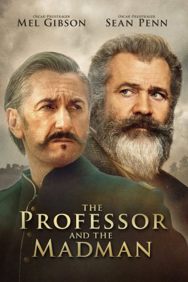
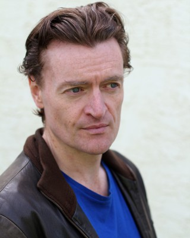

#12088 The Professor and the Madman
 
 IMDB-Wertung: 7.3 / 10
IMDB-Wertung: 7.3 / 10  Tomatometer: 38
Tomatometer: 38  Metascore: 25
Metascore: 25 
In der Mitte des 19. Jahrhunderts beginnt der Philologie-Professor James Murray (Mel Gibson) mit der Arbeit an der ersten Ausgabe des mittlerweile berühmten Oxford English Dictionary, dem umfangreichsten Wörterbuch der englischen Sprache. Dabei bekommt er Hilfe vom Psychopathen Dr. William Chester Minor (Sean Penn), der als Patient in einer Hochsicherheits-Psychatrie einsitzt und über 10.000 Beiträge schickt.
Jahr: 2019
Dauer: 124 Minuten
FSK: 12
Land: Irland Studio: GEM EntertainmentTonspuren: DD5.1 - ,
Untertitel: Deutsch,
Auflösung: 1080p (1920x808) Größe: 11571 MB
Genre: Thriller, Drama, Mystery, Biographie
Regisseur: Farhad Safinia
Drehbuch: John Boorman, Todd Komarnicki, Farhad Safinia, Simon Winchester
Soundtrack: Bear McCreary
Darsteller:
 Mel Gibson als James Murray
Mel Gibson als James Murray Sean Penn als Dr. William Chester Minor
Sean Penn als Dr. William Chester Minor Eddie Marsan als Mr. Muncie
Eddie Marsan als Mr. Muncie Natalie Dormer als Eliza Merrett
Natalie Dormer als Eliza Merrett Jennifer Ehle als Ada Murray
Jennifer Ehle als Ada Murray Steve Coogan als Frederick James Furnivall
Steve Coogan als Frederick James Furnivall Stephen Dillane als Dr. Richard Brayn
Stephen Dillane als Dr. Richard Brayn Ioan Gruffudd als Henry Bradley
Ioan Gruffudd als Henry Bradley Jeremy Irvine als Charles Hall
Jeremy Irvine als Charles Hall Laurence Fox als Philip Lyttelton Gell
Laurence Fox als Philip Lyttelton Gell- Anthony Andrews als Benjamin Jowett
 Lars Brygmann als Max Mueller
Lars Brygmann als Max Mueller- Bryan Murray als Henry Liddell
 David O'Hara als Church
David O'Hara als Church Sean Duggan als Tom Coleman
Sean Duggan als Tom Coleman- Olivia McKevitt als Clare Merrett
- Robert McCormack als Harold Murray
-  Anthony Brophy als Sergeant Steggles
 Aidan McArdle als Defence Attorney Clarke
Aidan McArdle als Defence Attorney Clarke- Shane Noone als George Merrett
- Brian Fortune als Head Board Member
- Oengus MacNamara als Bailiff #1
- Rúaidhrí Conroy als Declan Reilly
- Brendan Patricks als Winston Churchill
- Bosco Hogan als Lord Chief Justice
- Philip O'Sullivan als Prosecutor Denman
- David Crowley als Parfit
- Steve Gunn als Lambeth Man
- Bryan Quinn als Sir Richard
- Joe McKinney als Attendant No.1
- Shane Gately als Angry Spectator
 Christopher Maleki als Fredo
Christopher Maleki als Fredo- John Morton als Scriptorium Assistant
- Chris Mc Morrow als Photographer (uncredited)
- Kieran O'Reilly als Minor's Father (uncredited)
- Emily Daly als Iris Merrett
- Luke Harman als Jack Merrett
- Teegan Devlin als Peggy Merrett
- Nathan Harte als Peter Merrett
- Alice Kelly als Olive Merrett
- Aoife Kelly als Olive Merrett
- Phonsie Wardell als Oswyn Murray
- Abigail Coburn als Elsie Murray
- Nora Cooper als Hilda Murray
- Brian Harty als Bailiff #2
- Simon Coury als Sir Charles Troup
- David Heap als Jury Foreman
- Malcolm Freeman als Colonel
- Gordon Hudson als Refree
- Patrick McCaw als Wellington Player
Datei: X:\2019(N-Z)\Professor and the Madman, The (2019, FSK12, 1920x808).mkv seit 01.12.2019
Festplatte: HD 2018(G-Z)-2019(A-Z)
 Es gibt insgesamt 62 Filme in der Gruppe '2019(N-Z)'
Es gibt insgesamt 62 Filme in der Gruppe '2019(N-Z)'